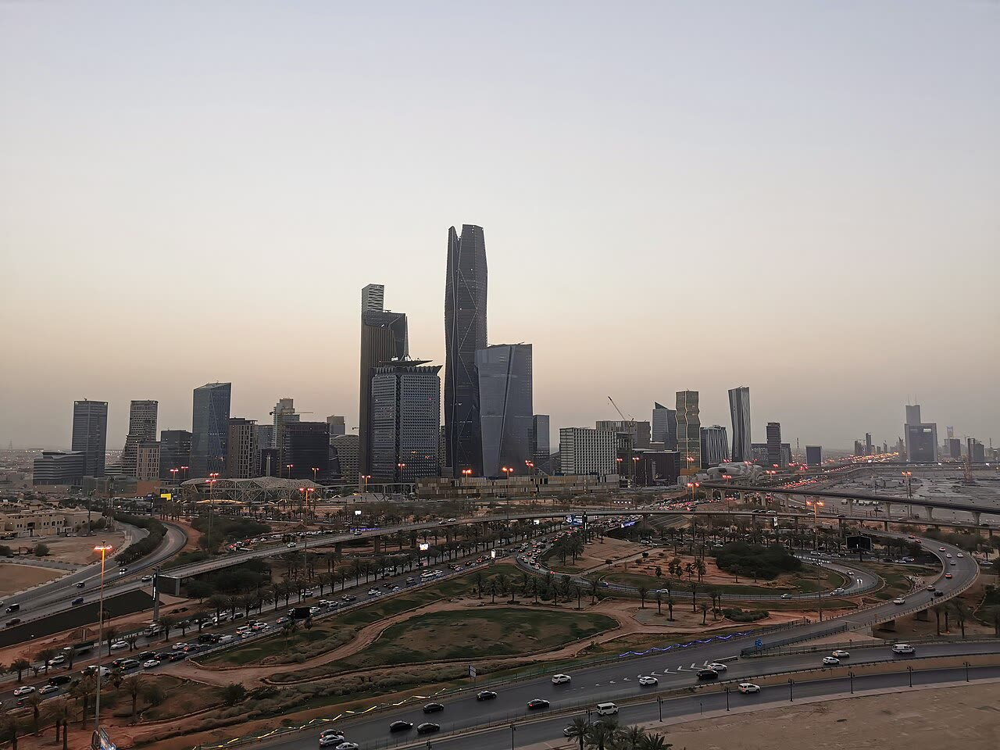

Attacco houthi a Riad, danni alla torre Aramco (lievi, per i sauditi)
Un palazzo di uffici danneggiato non muove il petrolio; ma ogni attacco alla casa di Aramco alza il rischio per la bolletta che paghiamo noi.
Redazione Contrappunto · aggiornato il 08.11.2026


Gli Houthi sono un movimento armato sciita dello Yemen (Ansar Allah, in arabo), al potere nella capitale Sanaa dal 2014 e alleati dell'Iran. Dal 2015 l'Arabia Saudita guida una coalizione che sostiene il governo yemenita riconosciuto; una tregua del 2022 è saltata a luglio 2026, e da allora gli Houthi colpiscono con missili e droni aeroporti e impianti petroliferi sauditi. La guerra yemenita è oggi un fronte della guerra regionale cominciata a febbraio con gli attacchi di Stati Uniti e Israele all'Iran. Domenica 8 novembre gli Houthi hanno rivendicato attacchi a Riad e un edificio amministrativo di Saudi Aramco, la compagnia petrolifera di Stato saudita e la maggiore del mondo, nel distretto finanziario King Abdullah ha riportato danni. Quanto gravi, e cosa sia stato colpito oltre a quell'edificio, lo dicono fonti diverse: sotto.
Vedi di più: 6 parole spiegate, cosa si racconta
Cosa si raccontaPer il governo saudita (nota del ministero dell'Energia, ripresa da France 24, Dawn, TASS, Saudi Gazette e Asharq Al-Awsat) è stato un tentato attacco: schegge, danni lievi, nessun ferito. Testimoni citati dall'AFP (France 24, Dawn, ANSA) parlano di vetri saltati su più piani. La Vanguardia scrive di resti di un proiettile intercettato. Gli Houthi rivendicano quattro operazioni, compresa Abqaiq, senza conferme indipendenti. TASS, agenzia di Stato russa, nel testo che abbiamo salvato riporta solo la nota saudita. [France 24] [Dawn] [El País] [La Vanguardia] [TASS] [Saudi Gazette] [Asharq Al-Awsat] [ANSA] [Adnkronos]
- Houthi (Ansar Allah)
- Movimento ribelle yemenita sciita che controlla Sanaa dal 2014; per France 24 e El País è sostenuto dall'Iran. Le sue cifre e rivendicazioni sono quelle di una parte in guerra (France 24, La Vanguardia, TASS).
- Coalizione a guida saudita
- L'alleanza di Stati arabi che dal 2015 combatte gli Houthi a sostegno del governo yemenita riconosciuto; il suo portavoce è Turki al-Malki (La Vanguardia, France 24).
- Saudi Aramco
- La compagnia petrolifera di Stato dell'Arabia Saudita, la maggiore al mondo (El País, TASS).
- KAFD
- King Abdullah Financial District: il distretto finanziario di Riad, con la sede del fondo sovrano PIF e la Borsa saudita; per El País è chiuso da quasi un mese e i dipendenti lavorano da casa (France 24, El País).
- Abqaiq
- Città della Provincia orientale saudita con un grande impianto di lavorazione del petrolio, 7 milioni di barili al giorno secondo Wikipedia; in arabo Biqayq (Wikipedia).
- Brent
- Il greggio di riferimento per l'Europa: l'EIA, agenzia statistica del Dipartimento dell'Energia americano, ne pubblica il prezzo in dollari al barile (EIA).
- Il ministero saudita dell'Energia parla di «attempted attack» con danni lievi a un edificio Aramco a Riad; i testimoni dell'AFP vedono vetri saltati su più piani; gli Houthi rivendicano quattro operazioni, comprese Abqaiq e l'aeroporto, senza conferme che abbiamo letto.
- Il Brent, per l'EIA, era a 107,03 dollari il 3 novembre, il 50% sopra i 71,32 del 27 febbraio; non abbiamo letto il prezzo di oggi.
Il governo saudita parla di «attempted attack» e danni lievi, i testimoni dell'AFP (France 24, Dawn, ANSA) di vetri saltati su più piani, gli Houthi di quattro operazioni, Abqaiq compresa: solo il danno all'edificio ha conferme; TASS, agenzia di Stato russa, riporta la sola nota di Riad. Regge a metà. Quindi? Il Brent era a 107 dollari il 3 novembre, il 50% sopra febbraio, e un edificio di uffici in un distretto chiuso da quasi un mese (El País) conta meno di un porto o di una raffineria. L'Italia ha interesse a rotte aperte, non a una guerra che ci alza il conto. [1] [2] [8] [5] [3] [10]
La verifica punto per punto5 passaggi, 11 fonti
Qui sotto ogni cosa scritta sopra, una per una, con le fonti. Confermato: lo dice un documento originale o più fonti lette. Plausibile: lo riportano fonti serie, ma non abbiamo letto l'originale. Discordante: le fonti danno numeri diversi, e diciamo quali. Ipotesi e Opinione sono il nostro ragionamento, separato dai fatti.
Cosa è successo e chi lo dice
Domenica 8 novembre il ministero dell'Energia saudita ha detto che un edificio amministrativo di Saudi Aramco a Riad ha subìto un «attempted attack» (tentato attacco), con caduta di schegge, danni lievi e nessun ferito né morto (France 24, Dawn, TASS, Asharq Al-Awsat; Saudi Gazette scrive di danni «limitati»). Testimoni dell'AFP dicono che la torre Aramco nel KAFD è stata colpita e che i vetri sono saltati su più piani; l'AFP non ha potuto confermare l'entità dei danni (France 24, Dawn, ANSA). Gli Houthi hanno rivendicato «four qualitative military operations» con missili balistici e da crociera e droni: distretto finanziario, aeroporto di Riad, serbatoi Aramco e Abqaiq (France 24, Dawn). Delle altre tre non abbiamo letto alcuna conferma; il testo salvato di TASS riporta solo la nota saudita e non la rivendicazione.
Quanti missili, quanto danno
Sui missili: il portavoce della coalizione Turki al-Malki ha detto che le difese hanno intercettato due missili balistici verso Riad (France 24, Dawn, La Vanguardia), poi due da crociera su Riad e il Sud e un balistico verso la Regione Orientale (Asharq Al-Awsat, La Vanguardia). Un titolo di Saudi Gazette, che non abbiamo letto, parla di tre balistici e due da crociera su Riad e altre regioni: i conti possono tornare sommando il balistico verso Est, ma non l'abbiamo verificato. Sul danno: «lieve» o «limitato» per il governo saudita, vetri saltati su più piani per i testimoni; per La Vanguardia l'edificio è stato toccato da resti di un proiettile intercettato, per un testimone dell'AFP il proiettile ha colpito l'edificio, di tipo non noto (France 24).
Houthi, Iran e petrolio
Gli Houthi hanno preso Sanaa nel 2014; la coalizione saudita è entrata in guerra nel 2015 (France 24, La Vanguardia). Sono «Iran-aligned» per France 24 e sostenuti dall'Iran per El País; La Vanguardia colloca la ripresa dei combattimenti dentro la guerra regionale nata a febbraio con gli attacchi di Stati Uniti e Israele all'Iran. Sulla fine della tregua del 2022 le fonti divergono: per France 24 è saltata a luglio dopo un attacco del governo yemenita filosaudita all'aeroporto di Sanaa; per Dawn dopo che gli Houthi avevano fatto atterrare a Sanaa un aereo iraniano, sfidando il controllo saudita dello spazio aereo. Per l'ONU, da luglio oltre 1.600 morti e 300 mila sfollati. Il giorno prima, per il ministero della Salute houthi (portavoce Anees Alasbahi), raid sauditi vicino a Sanaa avevano ucciso 33 persone: dato di parte, non verificato (Adnkronos). Quanto al petrolio, per l'EIA il Brent era a 107,03 dollari il 3 novembre, 120,15 il 30 ottobre e 71,32 il 27 febbraio. Non abbiamo letto il prezzo di oggi.
Il bersaglio è l'immagine, più del greggio
Colpire il distretto finanziario di Riad serve a minare la fiducia nel progetto economico saudita più che a ridurre la produzione di petrolio.
Ragionamento: L'analista Andreas Krieg lo legge come «an attack on the credibility of Vision 2030 as much as on Aramco itself» (AFP, France 24). L'edificio è amministrativo e il distretto è chiuso da quasi un mese (El País): è difficile che tocchi la produzione. Contro: gli Houthi dicono di aver colpito anche serbatoi e Abqaiq, e se fosse vero il quadro cambierebbe; ma non c'è conferma. Fiducia media.
Il nostro punto
Una guerra non nostra ci costa già un Brent del 50% sopra febbraio, e ora ha un secondo fronte, quello yemenita, accanto a Hormuz. L'interesse italiano ed europeo è semplice: rotte aperte e prezzi che scendono, quindi trattative con chiunque abbia un canale aperto, Iran e Golfo compresi, e nessuna Europa trascinata a scortare una guerra altrui. Ogni settimana di combattimenti è un'imposta mai votata sull'energia, e la paga chi riempie il serbatoio.
Fonti11, tutte con il link
- Yemen's Houthis claim attack on Aramco skyscraper in Riyadh (8 novembre 2026) (France 24) · consultata il 08.11.2026
- Aramco skyscraper damaged as Houthis target Riyadh financial district (8 novembre 2026) (Dawn) · consultata il 08.11.2026
- Un ataque contra Riad provoca daños en las oficinas de la mayor petrolera del mundo, Saudi Aramco (8 novembre 2026) (El País) · consultata il 08.11.2026
- Alcanzado el edificio de Aramco en Riad por restos de un proyectil lanzado por los hutíes (8 novembre 2026) (La Vanguardia) · consultata il 08.11.2026
- Saudi Aramco building in Riyadh damaged in attack (8 novembre 2026) — agenzia di Stato russa (TASS) · consultata il 08.11.2026
- Saudi Aramco facility targeted in attempted attack in Riyadh; no casualties reported (8 novembre 2026) (Saudi Gazette) · consultata il 08.11.2026
- Energy Ministry: Minor Damage in Attempted Attack on Saudi Aramco Building in Riyadh (8 novembre 2026) (Asharq Al-Awsat) · consultata il 08.11.2026
- «Preso di mira il distretto finanziario di Riad, danneggiato l'edificio di Aramco» (8 novembre 2026) (ANSA) · consultata il 08.11.2026
- Riad sotto attacco, danni alla torre Aramco: intercettati missili diretti sulla capitale (8 novembre 2026) (Adnkronos) · consultata il 08.11.2026
- Europe Brent Spot Price FOB, serie storica (rilascio del 4 novembre 2026) (EIA) · consultata il 08.11.2026
- Abqaiq (Wikipedia) · consultata il 08.11.2026